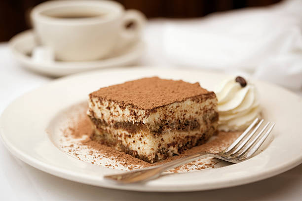

El tiramisú es un postre italiano clásico que ha ganado fama internacional. Su historia se remonta al siglo XVII en la región de Veneto, en el noreste de Italia, aunque su popularidad se disparó en el siglo XX. La historia exacta del tiramisú es objeto de debate, ya que varias regiones italianas reclaman su invención. Sin embargo, la versión más aceptada es que el tiramisú se originó en la región de Veneto, específicamente en la ciudad de Treviso o en las cercanías de la ciudad de Venecia. La palabra "tiramisú" significa "levántame" o "dame ánimo" en italiano, lo que sugiere que este postre fue creado para proporcionar energía. Se cree que inicialmente se elaboraba como un alimento reconfortante para las mujeres que daban a luz, ya que contenía ingredientes energéticos como el café y los huevos. La receta tradicional del tiramisú incluye capas de bizcochos de soletilla empapados en café, crema de mascarpone (un tipo de queso italiano), huevos y azúcar, espolvoreados con cacao en polvo. La combinación de café y mascarpone crea un sabor rico y equilibrado que ha conquistado paladares en todo el mundo. A medida que el tiramisú ganaba popularidad en Italia, se extendió a otros países y se adaptó a diferentes variaciones, como agregar licores como el Marsala o el amaretto, o incluso sustituir el café por otros sabores, como el chocolate o las frutas. Sin embargo, la receta clásica sigue siendo la más venerada y apreciada.
| Ingrediente | Cantidad | Unidad |
|---|---|---|
| Bizcochos de soletilla | 200 | gramos |
| Café | 1 | taza |
| Crema de mascarpone | 250 | gramos |
| Huevos | 4 | unidades |
| Azúcar | 100 | gramos |
| Cacao en polvo | 2 | cucharadas |
Para más detalles sobre esta receta, puedes visitar una receta similar aquí.
Para ver otra imagen de la receta, puedes hacer clic aquí.
{kind=link}